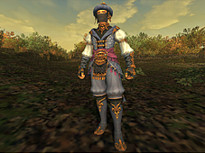
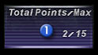
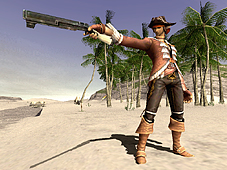
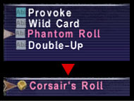
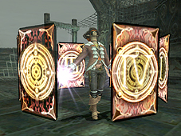
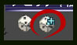
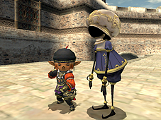
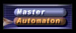
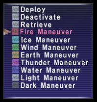

[Blue Mage]
Blue Mage Job Abilities

- 2-hour ability: Azure Lore (Level 1)
Enhances the effect of blue magic spells.
- Chain Affinity (Level 40)
Makes it possible for your next "physical" blue magic spell to be used in a skillchain. Effect varies with TP.
- Burst Affinity (Level 40)
Makes it possible for your next "magical" blue magic spell to be used in a Magic Burst.
Acquiring Blue Magic
Blue magic is acquired by “learning” the special abilities of monsters.

- You can only learn the special abilities of monsters when blue mage is set as your main job.
- You have a chance to acquire blue magic when defeating a monster that has used a learnable special ability.
- It is not possible to learn blue magic that is too far above your level.
- You will not acquire blue magic if you are KO'd when a monster is defeated, or the defeated monster does not yield experience points.
*Some monster abilities cannot be learned as blue magic.
*It is not necessary to be the target of a monster's special ability in order to learn blue magic.
Using Blue Magic
Unlike other magic spells, it is not possible to use blue magic as soon as it is acquired. First, the spells you wish to use must be “set.”
Using the system described below, you can freely assign the spells you wish to use.

1. Point Total/Maximum
Each blue magic spell is assigned a point value (blue magic points). The level of the blue mage determines the maximum number of points available for setting spells.
2. Maximum Number of Set Spells
The maximum number of blue magic spells that can be set at one time is also determined by the blue mage's level. This maximum number may decrease when the blue mage is under a level restriction and so the set numbers are assigned a color for easy reference.
Blue Magic Points and Max. Number of Set Spells Per Level
| Level | Blue Magic Points | Set Max. |
| 1-10 | 10 | 6 |
| 11-20 | 15 | 8 |
| 21-30 | 20 | 10 |
| 31-40 | 25 | 12 |
| 41-50 | 30 | 14 |
| 51-60 | 35 | 16 |
| 61-70 | 40 | 18 |
| 71-75 | 45 | 20 |
Blue magic spells can be set by selecting the “Set Spells” option after choosing “Blue Magic” under “Magic” in the main menu. Please be aware that any time blue magic spells are set, the blue mage will be unable to cast any spells for 1 minute.
Regarding Blue Magic
The help text for blue magic contains various types of information.
1. Blue magic spell
The name of the blue magic spell.
2. Spell effect
The TP information included in "physical" blue magic spells is applicable when using the job ability "Chain Affinity."
3. Blue magic type (Physical/Magical)
There are two types of blue magic spells--physical and magical.
The accuracy for "physical" blue magic is affected by the accuracy of the equipped main weapon.
4. Monster family
This refers to the monster family from which the blue magic spell was learned.
The accuracy and damage of blue magic spells are affected by the relation between different monster families.
5. Status bonus
This bonus is applied to the caster when the applicable blue magic spell is set.
Not all blue magic spells include a status bonus.
6. Usable level
The minimum level required to cast the spell.
7. MP cost
The amount of MP required to cast the spell.
8. Blue magic points
The number of points required to set the spell.
The total number of points used to set blue magic spells cannot exceed the maximum point value.
[Corsair]
Corsair Job Traits

- Resist Paralyze (Level 5)
Gives you a slight resistance against paralysis.
Corsair Job Abilities
- 2-hour ability: Wild Card (Level 1)
Has a random effect on all party members within area of effect.
*The Wild Card ability is not affected by the Wild Card effect.
- Phantom Roll (Level 5)
Grants a beneficial effect to party members within area of effect.
- Double-Up (Level 5)
Enhances an active Phantom Roll effect that is eligible for Double-Up.
- Quick Draw (Level 40)
Shoot a bullet charged with the magical energy of an elemental card. Special items required.
*The effects of enfeebling magic that match the element of the card may be enhanced.
*The corsair must equip a gun and ammunition, and be in possession of the appropriate elemental card in order to use this ability e.g. Fire Shot requires a fire card. One card is consumed with each use of the ability.
- Random Deal (Level 50)
Has the possibility of resetting the recast time of a random ability for party members within area of effect.
*The Random Deal ability is not affected by the Random Deal effect.

Acquiring Phantom Rolls
The Phantom Roll ability is learned at level 5. However, in order to use this ability, corsairs must use “dice“ to learn various rolls, in much the same way scrolls are used to learn spells. Acquired rolls will appear in a sub-menu after selecting Phantom Roll.

Using Phantom Roll
When the Phantom Roll ability is used, a number (in roman numerals) from “I” to “VI” is generated and party members within range gain the effect of the roll. The number displayed affects the degree of the roll's effect.

- Double-Up
For 45 seconds after using a Phantom Roll, the corsair will have the option of using the Double-Up ability. This period of time is represented by the “Double-Up Chance” icon.
Using Double-Up will once again generate a number from “I” to “VI,” which is then added to the total of the previous roll.
*Corsairs can continue to use the Double-Up ability as long as the Double-Up Chance icon remains.
- Phantom Roll totals
The effect of a roll will continue to increase as the total rises from “I” to “XI.” However, if the total reaches “XII” or more, the roll will “Bust.”
Each Phantom Roll has a lucky and unlucky number. Obtaining a total equal to a roll’s lucky number will produce an effect second only to a total of “XI.” A total equal to the unlucky number will produce an effect weaker than a total of “I.”
If the roll becomes a “Bust,” party members will lose the effect of the roll and the corsair will experience an additional penalty.
*A “Bust” will reduce the number of possible active Phantom Rolls by one, as well as inflict a detrimental effect corresponding to a “Bust” roll.
- Special effects of Phantom Roll
The effect of a Phantom Roll will be enhanced depending on the type of roll and the main jobs of party members. For example, when a Fighter’s Roll is used, the effect of the roll will be greater if a warrior is in the party.
- Things to consider when using Phantom Roll
Characters with corsair set as a main job can have a
maximum of two active Phantom Rolls, while those with corsair as a support job are limited to one active Phantom Roll effect.
The Phantom Roll effects of a character with corsair set as a support job are weaker, and do not gain the bonus effect from the presence of the applicable main job in the party.
A Phantom Roll effect cannot be reapplied until after it has worn off or been removed.
*As of the July version update of 2006, a character using bard songs and the corsair ability Phantom Roll is able to stack up to 3 effects on each party member.
However, a single character is only able to receive up to a total of 12 combined Phantom Roll and bard song effects.
[Puppetmaster]
Puppetmaster Job Traits

- Resist Slow (Level 10)
Gives you a slight resistance against slow.
- Evasion Bonus (Level 20)
Improves evasion against physical attacks.
- Martial Arts (Level 25)
Increases speed of hand-to-hand attacks.
Puppetmaster Job Abilities
- 2-hour ability: Overdrive (Level 1)
Augments the fighting ability of your automaton to its maximum level.
- Activate (Level 1)
Calls forth your automaton.
Activate has a 20 minute recast time. Also, your automaton will disappear when you are affected by a level restriction, and must be recalled using the Activate ability.
- Repair (Level 15)
Gradually restores your automaton's HP. Special items required.
*The Repair ability requires the puppetmaster to equip an item called “automaton oil” that can be made with the alchemy skill, or purchased at shops.
Puppetmaster Pet Commands
- Deploy (Level 1)
Orders your automaton to attack.
- Deactivate (Level 1)
Deactivates your automaton.
- Retrieve (Level 10)
Orders your automaton to return to your side.
- Fire Maneuver (Level 1)
Enhances the effect of fire attachments.
- Ice Maneuver (Level 1)
Enhances the effect of ice attachments.
- Wind Maneuver (Level 1)
Enhances the effect of wind attachments.
- Earth Maneuver (Level 1)
Enhances the effect of earth attachments.
- Thunder Maneuver (Level 1)
Enhances the effect of thunder attachments.
- Water Maneuver (Level 1)
Enhances the effect of water attachments.
- Light Maneuver (Level 1)
Enhances the effect of light attachments.
- Dark Maneuver (Level 1)
Enhances the effect of dark attachments.
Automatons
Automatons are constructed from three types of components--a head, a frame, and various types of attachments. Your automaton will start out with the standard head and frame parts, but there are also parts available specifically for melee, magical, and ranged combat.
There are also numerous types of available attachments that allow you to customize your automaton with a range of abilities.

Customizing Your Automaton
You can customize your automaton from the “Automaton” sub-menu found under “Equipment” in the main menu.
1. Head
The head equipment slot.
The type of head you select will affect the automaton's positioning in battle, as well as direct its basic behavior patterns.
2. Frame
The frame equipment slot.
The type of frame will affect the abilities and magic available to the automaton.
3. Attachments
The attachment equipment slots.
A maximum of 12 attachments can be equipped on your automaton, regardless of the selected head or frame.
4. Maximum capacity
This value represents the automaton's maximum capacity for equipping attachments.
The combined values of the head and frame parts set the limit for each elemental capacity.
5. Attachment functions
The functions or abilities provided by each individual attachment.
6. Required capacity
These values represent the elemental capacity required to equip the attachment.
Attachments with requirements that exceed the maximum capacity cannot be equipped.
7. Skill
The various skill values of your automaton.
*An activated automaton cannot be customized. You must first deactivate your automaton in order to change its equipped parts.
*Any combination of head and frame parts can be equipped; however, not all combinations are equally functional.
*When a puppetmaster has equipped attachments that can only be used with a certain type of head or frame, it is not possible to equip other head or frame parts that do not support those attachments. You must remove those attachments first before attempting to equip a different head or frame.

Controlling Your Automaton
An automaton will act automatically in relation to its equipped attachments.
It is possible to give simple commands such as attack and retreat, but you cannot command your automaton to use specific spells or abilities.
Effects of Maneuvers
Using a maneuver command will cause the automaton to give priority to actions that correspond to that maneuver's element.
Maneuver commands will also activate the abilities of corresponding attachments.
Fire Maneuver: STR/Attack/Increase enmity
Ice Maneuver: INT/Elemental magic/Magic attack
Wind Maneuver: AGI/Evasion/Ranged accuracy
Earth Maneuver: VIT/Defense
Thunder Maneuver: DEX/Accuracy
Water Maneuver: MND/Magic defense/Curing
Light Maneuver: CHR/HP recovery
Dark Maneuver: MP/MP recovery
*In order to use the Maneuver commands, the puppetmaster must equip a special item called an “animator.”
An animator is obtained along with the puppetmaster job. If you throw away the animator by accident, you must pay an expensive sum to obtain another one.
Overload
Using a maneuver will increase the burden associated with that maneuver's element. When that burden exceeds a certain amount, the automaton will become overloaded.
An overloaded automaton will be temporarily unresponsive to maneuver commands, and will experience a reduction in combat ability.
*The burden associated with maneuver commands will gradually decrease over time.
*Activating an automaton will also increase an automaton’s burden.